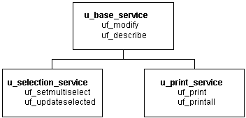
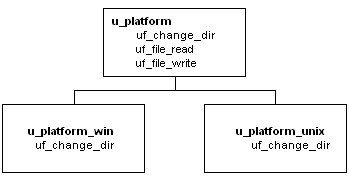
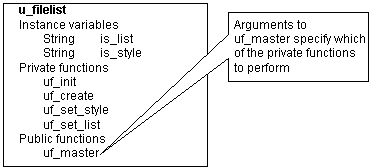
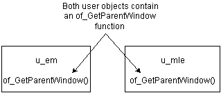
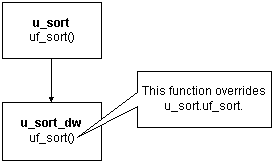

PowerBuilder provides full support for inheritance, encapsulation, and polymorphism in both visual and nonvisual objects.
 Creating reusable objects In most cases, the person developing reusable objects is not
the same person using the objects in applications. This discussion
describes defining and creating reusable objects. It does not address
usage.
Creating reusable objects In most cases, the person developing reusable objects is not
the same person using the objects in applications. This discussion
describes defining and creating reusable objects. It does not address
usage.
PowerBuilder makes it easy to create descendent objects. You implement inheritance in PowerBuilder by using a painter to inherit from a specified ancestor object.
For examples of inheritance in visual objects, see the w_employee window and u_employee_object in the Code Examples sample application.
Example of ancestor service object One example of using inheritance in custom class user objects is creating an ancestor service object that performs basic services and several descendent service objects. These descendent objects perform specialized services, as well as having access to the ancestor's services:

Example of virtual function in ancestor object Another example of using inheritance in custom class user objects is creating an ancestor object containing functions for all platforms and then creating descendent objects that perform platform-specific functions. In this case, the ancestor object contains a virtual function (uf_change_dir in this example) so that developers can create descendent objects using the ancestor's datatype.

For more on virtual functions, see "Other techniques".
Encapsulation allows you to insulate your object's data, restricting access by declaring instance variables as private or protected. You then write object functions to provide selective access to the instance variables.
One approach One approach to encapsulating processing and data is as follows:
Another approach Another approach to encapsulating processing and data is to provide a single entry point, in which the developer specifies the action to be performed:

For an example, see the uo_sales_order user object in the Code Examples sample application.
 Distributed components When you generate an EAServer or
COM/COM+ component in the Project painter, public
functions are available in the interface of the generated component
and you can choose to make public instance variables available. Private
and protected functions and variables are never exposed in the interface of
the generated component.
Distributed components When you generate an EAServer or
COM/COM+ component in the Project painter, public
functions are available in the interface of the generated component
and you can choose to make public instance variables available. Private
and protected functions and variables are never exposed in the interface of
the generated component.
Polymorphism refers to a programming language's ability to process objects differently depending on their datatype or class. Polymorphism means that functions with the same name behave differently depending on the referenced object. Although there is some discussion over an exact definition for polymorphism, many people find it helpful to think of it as follows:
Operational polymorphism Separate, unrelated objects define functions with the same name. Each function performs the appropriate processing for its object type:

For an example, see the u_external_functions user object and its descendants in the Code Examples sample application.
Inclusional polymorphism Various objects in an inheritance chain define functions with the same name.
With inclusional polymorphism PowerBuilder determines which version of a function to execute, based on where the current object fits in the inheritance hierarchy. When the object is a descendant, PowerBuilder executes the descendent version of the function, overriding the ancestor version:

For an example, see the u_employee_object user object in the Code Examples sample application.